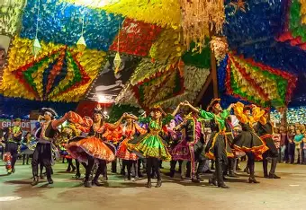

O que é a Conexão Campo-Cidade?
A conexão campo e cidade refere-se à interdependência entre as áreas rurais e urbanas, onde práticas agrícolas e de pecuária se encontram com o cotidiano das cidades, promovendo um ciclo de troca de produtos, serviços e conhecimentos.
Festejando as Conexões
As festas, tradições e culinária típicas do campo se misturam com a agitação das cidades, criando um ambiente de celebração da diversidade. Exemplo disso são as festas típicas, como as festas juninas, onde se misturam danças, comidas e músicas do interior com a energia urbana.

Festa Junina
Saiba MaisBenefícios da Conexão Campo-Cidade
- Crescimento econômico: As cidades recebem uma força de trabalho que dinamiza o mercado local.
- Troca cultural: A convivência entre rural e urbano gera novas ideias e fortalece as tradições.
- Inovação: A tecnologia e a educação urbana são levadas para o campo, trazendo novos conhecimentos.
Desafios da Conexão Campo-Cidade
Apesar de todos os benefícios, ainda existem desafios a serem superados, como o crescimento desordenado das cidades e a manutenção das tradições do campo.